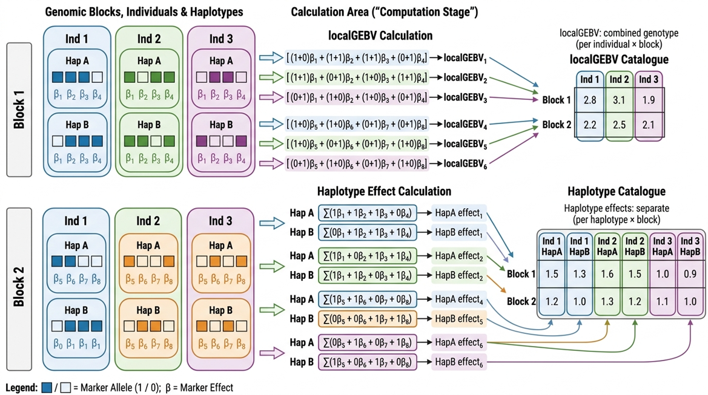

localGEBV and Haplotype Effects¶
LocalGEBV¶
Local genomic estimated breeding values (localGEBV) quantify the breeding value contribution of each haploblock for each individual. The localGEBV are calculated as:
where \(({x_{ik}} - \overline{x_{i}})\) is the centered (see VanRaden, 2008) allele dosage of individual \(k\) at marker \(i\) in haploblock \(j\), and \(\hat{\alpha}_i\) is the estimated marker effect. If mean_adjust = FALSE, then it is not centered and is the actual value.
This produces an \(\text{J × N}\) matrix of localGEBV values — one value per individual for \(N\) individuals per haploblock for \(J\) haploblocks — which captures the breeding value contribution of each genomic region separately.
Haploblock variance is then computed as:
Haplotype Effects¶
Similarly, haplotype effects can be calculated as the per-chromosome contribution:
where all terms are the same, except \(({x_{ikl}} - \frac{\overline{x_{i}}}{2})\) is the centered allele of individual \(k\) on chromosome \(l\) at marker \(i\) in haploblock \(j\) and the result is the haplotype effect of individual \(k\) for chromosome \(l\) and haploblock \(j\). The centered allele is equivalent to subtracting the allele frequency, p, from the allele in 0/1 format. Dividing the mean dosage by 2 is equivalent for a diploid where the mean is 2p. If the mean is equivalent to 2p for a diplid, then the mean of a haplotype (on average 1/2 of the GEBV) if simply p, which is the mean divided by 2.
This produces an \(\text{J × NL}\) matrix of haplotype effects — one value per individual per chromosome for \(L\) chromosome sets per haploblock for \(J\) haploblocks.
Variance is compute in the same fashion. However, because there are LN (LN = 2N for diploid) values per haploblock and each haplotype effect is less than a corresponding localGEBV (exactly 1/2 if the case of a completely inbred and homozygous population), the variance of haplotype effects is usually substantially less the variance of localGEBV. However, the ranking of blocks is still the same for completely inbred populations and likely highly correlated even for highly outbred populations. Thus, its intended purpose as a metric to choose informative haploblocks and assess genome architecture is nearly invariant to choose of localGEBV or haplotype effects.
Formulas Visualised¶

compute_local_GEBV() and compute_haplotype_effects() functions¶
#localGEBV
haploblock_obj <- compute_local_GEBV(
geno = geno,
marker_effects = marker_effects,
haploblocks_df = haploblocks,
set_missing_NA = TRUE, #if TRUE, any missing genotypes in a block will return NA for the localGEBV
mean_adjust = TRUE, #centeres the genotype matrix - this should be TRUE in almost every case! Setting to FALSE will lead to biased localGEBV!
parallel = FALSE, #if TRUE, process blocks in parallel
chunk_size = 100 #maximum number of blocks sent to a parallel worker at once
)
#haplotypes
haploblock_obj <- compute_haplotype_effects(
geno = geno_phased,
marker_effects = marker_effects,
haploblocks_df = haploblocks,
set_missing_NA = TRUE, #if TRUE, any missing alleles in a block will return NA for the haplotype effect
mean_adjust = TRUE, #centeres the allele matrix - this should be TRUE in almost every case! Setting to FALSE will lead to biased haplotype effects!
parallel = FALSE,
chunk_size = 100
)
| Parameter | Default | Description |
|---|---|---|
geno |
Dosage genotype matrix (compute_local_GEBV()) or phased genotype matrix (compute_haplotype_effects()). See Getting Started |
|
marker_effects |
Data frame with columns for SNP ID and estimated effect | |
haploblocks_df |
Haploblock data frame from block_obj_to_df() |
|
set_missing_NA |
TRUE |
If TRUE, replaces localGEBV/haplotype effects for any individual with missing genotypes with NA |
mean_adjust |
TRUE |
Centers the genotypes, required in most cases |
parallel |
FALSE |
If TRUE, process haploblocks in parallel, using up to the number of cores allowed by set_cpu_cores() (see Configuration) |
chunk_size |
100 |
Maximum number of haploblocks sent to a parallel worker at once. Only used when parallel = TRUE |
Warning
Use the dosage genotype matrix (e.g., HapSelect::geno) with compute_local_GEBV() and the phased genotype matrix (e.g., HapSelect::geno_phased) with compute_haplotype_effects(). They are not interchangeable!
set_missing_NA¶
-TRUE if a haplotype/marker configuration for an individual in a haploblock is missing \(>=\) 1 genotype call, the localGEBV value/haplotype effect for that individual's block is set to NA.
-FALSE localGEBV/haplotype effects are calculated with all non-missing genotypes. The missing genotypes are imputed to the mean. In the case of mean_adjust = TRUE, this is 0 and thus do not affect the value. For uncentered marker matrices, this is the genotype mean (\(2p\) for a diploid, or \(lp\) for other ploidy where \(l\) is ploidy and \(p\) is the alternative allele frequency). An individual missing every genotype in a block is still set to NA.
mean_adjust¶
-TRUE centers the genotypes/alleles according to VanRaden, 2008. This is a necessary step in the vast majority of cases to prevent biasing localGEBV/haplotype effects and GEBV. It does not affect haploblock variance, but it may affect how parents are chosen in the GA.
-FALSE does not center the genotypes/alleles.
Warning
If marker effects are computed using an additive genetic model like GBLUP backsolve, rrBLUP, BayesC, etc., this WILL lead to biased localGEBV/haplotype effects and GEBV!!! Only set this to FALSE if you are confident in what you are doing!
parallel and chunk_size¶
With parallel = TRUE, haploblocks are grouped into chunks of similar computational cost and the chunks are processed across parallel workers. Results are identical to parallel = FALSE.
- Larger blocks (more markers or individuals) take longer, so chunks are balanced by estimated cost rather than by the number of blocks.
chunk_sizecaps the number of blocks in a chunk, which caps the amount of genotype data sent to each worker. Lower it if R runs out of memory in parallel mode.
Tip
Starting parallel workers takes a few seconds, so the benefit of parallel = TRUE grows with the number of blocks and individuals. On very small datasets it may not be faster than parallel = FALSE.
Output Object¶
compute_local_GEBV() and compute_haplotype_effects() return a list with:
$Haploblocks— haploblock dataframe from Haplotype Blocks extended with:Num_Uniq_Hap— number of unique haplotypes (marker or allele configurations for localGEBV and haplotype effects, respectively) observed in the blockBlock_Var— population variance of localGEBV/haplotype effects across individuals (or chromosomes). This is the variance used to rank blocksUnique_Haplo_Block_Var— population variance of the effects of the unique haplotypes, ignoring how often each occurs
$Haplotype_ID_Matrix- blocks (J) × individuals (K) or chromosomes (KL) matrix of unique localGEBV/haplotype IDs listed in$Haplotypesdataframe$Haplotype_Effect_Matrix— blocks (J) × individuals (K) or chromosomes (KL) of haplotype effects/localGEBV values corresponding to$Haplotype_ID_MatrixIDs and$Haplotypesdataframe IDs and values.$Haplotypes- dataframe containing the unique haplotype/genotype configurations in each haploblock as well as their localGEBV estimates, with columns:Block_ID— the haploblockHaplo_ID— unique ID of the haplotype,Block_ID:number(e.g.,"1:2:3"is the 3rd unique haplotype in block1:2)Haplotype— the genotypes/alleles at each marker in the block, comma separated in marker order (e.g.,"0,2,1")Haplotype_Effect— localGEBV/haplotype effect of that configuration
Marker Effects Input¶
The marker_effects data frame must have:
- Column 1: SNP ID matching the map file
- Column 2: Estimated marker effect (e.g., from
rrBLUP::mixed.solve())
See Marker Effects for more information.